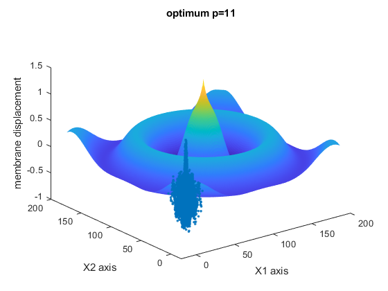

Contents
BE700 HW1 Prob 1
clear all
close all
warning('off', 'all')
tic
Part 1
[x1,x2,y] = textread('Problem1_BesselData.txt', '%f%f%f', 'headerlines',1);
R = (x1.^2 + x2.^2).^0.5;
for P=1:14
A= ones(length(R),P+1);
for n1 = 1:P
A(:,n1+1) = R.^n1;
end
B_hat.temp = (A' * A) \ (A' * y);
B_hat.i{P} = fliplr(B_hat.temp');
end
yfit = ones(1,5000);
R2 = R';
for P=1:14
yfit(P,:) = polyval(cell2mat(B_hat.i(P)), R2);
end
for P=1:14
r(:,P) = y - yfit(P,:)';
r2_sum(:,P) = sum(r(:,P).^2);
end
tfields = {'Polynomial order (p)'
'||r||^2 for a regular least-squares fit'
};
po = 1:1:14;
r2sumt = r2_sum';
po_table = table(po',r2sumt, 'VariableNames', tfields)
figure
z = 1;
for pID = 1:4
subplot(2,2,pID);
scatter(R,y)
hold on
scatter(R',yfit(z,:))
title(['Polynomial: ', num2str(z)])
z = z+1;
end
figure
for pID = 1:4
subplot(2,2,pID);
scatter(R,y)
hold on
scatter(R',yfit(z,:))
title(['Polynomial: ', num2str(z)])
z = z+1;
end
figure
for pID = 1:4
subplot(2,2,pID);
scatter(R,y)
hold on
scatter(R',yfit(z,:))
title(['Polynomial: ', num2str(z)])
z = z+1;
end
figure
for pID = 1:2
subplot(2,1,pID);
scatter(R,y)
hold on
scatter(R',yfit(z,:))
title(['Polynomial: ', num2str(z)])
z = z+1;
end
po_table =
14×2 table
Polynomial order (p) ||r||^2 for a regular least-squares fit
____________________ _______________________________________
1 425.17
2 412.42
3 369.4
4 268.61
5 168.66
6 164.73
7 105.34
8 47.384
9 43.922
10 28.828
11 28.81
12 29.38
13 27.887
14 27.722
Part 2
for numPEcurves = 1:1:20
bins = randsample(5000,5000);
tot = reshape(bins,1000,5);
for p = 1:1:14
for mse_val = 1:1:5
tot2 = tot;
tot2(:,mse_val) = [];
rn.train{mse_val} = r(tot2);
rn.test{mse_val} = r(tot(:,mse_val));
yn.train{mse_val} = y(tot2);
yn.test{mse_val} = y(tot(:,mse_val));
x = rn.train{mse_val}(:);
ynew = yn.train{mse_val}(:);
AA = ones(length(x),p+1);
for n2 = 1:p
AA(:,n2+1) = x.^n2;
end
B_hat2.t = (AA' * AA) \ (AA' * ynew);
B_hat2.i{numPEcurves}{p} = fliplr(B_hat2.t');
yfit2.t = polyval(B_hat2.i{numPEcurves}{p}, rn.test{mse_val}');
yfit2.i{numPEcurves}{p} = yfit2.t;
diff12.t{mse_val} = (yfit2.t - yn.test{mse_val}');
mse(mse_val) = 1/1000 * sum(diff12.t{mse_val}.^2);
end
MSE.t = 1/5 * sum(mse);
mse_tot(numPEcurves,p) = MSE.t;
end
end
tfields = {'p = 1' 'p = 2' 'p = 3' 'p = 4' 'p = 5' 'p = 6' 'p = 7' 'p = 8' 'p = 9' 'p = 10' 'p = 11' 'p = 12' 'p = 13' 'p = 14'};
pe_table = table(mse_tot(:,1), mse_tot(:,2), mse_tot(:,3) ,mse_tot(:,4), mse_tot(:,5), ...
mse_tot(:,6), mse_tot(:,7), mse_tot(:,8), mse_tot(:,9), mse_tot(:,10), mse_tot(:,11), mse_tot(:,12), ...
mse_tot(:,13), mse_tot(:,14),'VariableNames', tfields)
figure
for pp = 1:1:14
plot(1:1:14, mse_tot(pp,:), '-o')
hold on
end
legend(tfields)
ylabel('PE Values')
xlabel('polynomial degree for fitting')
pe_table =
20×14 table
p = 1 p = 2 p = 3 p = 4 p = 5 p = 6 p = 7 p = 8 p = 9 p = 10 p = 11 p = 12 p = 13 p = 14
__________ __________ __________ __________ __________ __________ __________ __________ __________ __________ __________ __________ __________ __________
0.00015143 0.00011772 0.00011676 0.00011433 0.00011433 0.00011434 0.00011357 0.00011359 0.00011225 0.00011234 0.00011194 0.00011195 0.00011199 0.000112
0.00015139 0.00011775 0.00011677 0.00011433 0.00011434 0.00011437 0.00011353 0.00011354 0.00011222 0.00011224 0.00011187 0.00011184 0.00011185 0.00011186
0.00015155 0.00011776 0.00011687 0.00011442 0.00011444 0.00011446 0.00011371 0.00011372 0.00011244 0.00011241 0.00011202 0.00011199 0.00011208 0.00011209
0.00015136 0.0001177 0.00011673 0.00011429 0.0001143 0.00011431 0.00011354 0.00011352 0.0001122 0.00011223 0.00011185 0.00011182 0.00011185 0.00011185
0.00015144 0.0001178 0.00011687 0.00011446 0.00011449 0.00011453 0.00011375 0.00011387 0.00011249 0.00011253 0.0001122 0.00011212 0.00011217 0.00011218
0.00015143 0.00011772 0.00011677 0.00011434 0.00011435 0.00011439 0.00011361 0.0001136 0.00011225 0.00011226 0.00011191 0.00011189 0.0001119 0.00011192
0.00015153 0.00011787 0.00011693 0.00011451 0.00011453 0.00011455 0.00011377 0.00011376 0.00011245 0.00011247 0.0001121 0.00011207 0.00011209 0.00011211
0.00015161 0.00011798 0.00011702 0.00011453 0.00011455 0.00011457 0.00011376 0.00011377 0.00011245 0.00011247 0.00011208 0.00011206 0.00011208 0.00011211
0.0001516 0.00011789 0.00011693 0.00011451 0.00011451 0.00011452 0.00011373 0.00011375 0.00011242 0.00011248 0.00011209 0.00011209 0.0001121 0.00011212
0.00015142 0.00011784 0.00011685 0.00011446 0.0001145 0.00011454 0.00011373 0.0001137 0.00011239 0.00011241 0.00011204 0.00011205 0.00011208 0.00011211
0.00015133 0.00011771 0.00011673 0.00011431 0.00011434 0.00011443 0.00011363 0.00011378 0.00011231 0.00011233 0.00011187 0.00011187 0.00011189 0.0001119
0.00015142 0.00011784 0.00011685 0.00011448 0.00011449 0.00011452 0.00011393 0.00011402 0.00011257 0.00011313 0.00011215 0.00011204 0.00011236 0.00011309
0.00015154 0.00011777 0.00011696 0.00011448 0.00011454 0.00011458 0.00011376 0.00011378 0.00011247 0.00011246 0.00011212 0.00011207 0.00011216 0.00011218
0.00015143 0.00011778 0.00011682 0.00011438 0.00011439 0.00011441 0.00011377 0.00011375 0.00011248 0.00011286 0.00011198 0.00011198 0.00011215 0.00011229
0.00015136 0.00011778 0.00011682 0.00011435 0.00011436 0.00011437 0.0001136 0.00011358 0.0001123 0.00011236 0.00011196 0.00011196 0.00011197 0.00011198
0.00015155 0.00011772 0.00011683 0.00011435 0.00011436 0.00011438 0.00011358 0.00011361 0.00011225 0.00011231 0.00011192 0.00011193 0.00011194 0.00011197
0.00015148 0.00011768 0.00011673 0.00011429 0.0001143 0.00011432 0.00011352 0.00011352 0.00011224 0.00011224 0.00011191 0.00011189 0.00011192 0.00011193
0.00015156 0.00011777 0.00011685 0.00011439 0.0001144 0.00011444 0.00011367 0.00011366 0.00011237 0.00011239 0.00011205 0.00011205 0.00011206 0.00011207
0.00015145 0.00011776 0.00011679 0.00011436 0.00011436 0.00011438 0.00011361 0.00011359 0.00011229 0.00011231 0.00011197 0.00011197 0.000112 0.00011203
0.00015155 0.00011786 0.0001169 0.00011447 0.00011451 0.00011452 0.00011372 0.0001137 0.00011239 0.00011241 0.00011205 0.00011202 0.00011203 0.00011204

Part 3
disp(' Polynomial model p=11 gives the optimum fit, visually it is the second model to describe the data, (second lowest ||r||^2) and has agreement on the PE plot.')
disp(' Initially visually I assumed 10 would be best since it was the first, however looking at the PE plot, there seems to be some disagreement, thus I chose p = 11')
Polynomial model p=11 gives the optimum fit, visually it is the second model to describe the data, (second lowest ||r||^2) and has agreement on the PE plot.
Initially visually I assumed 10 would be best since it was the first, however looking at the PE plot, there seems to be some disagreement, thus I chose p = 11
Part 4
figure
plot3(x1, x2, y, '.')
hold on
x1_mesh = -10: 0.1 : 10;
x2_mesh = -10: 0.1 : 10;
[X1, X2] = meshgrid(x1_mesh, x2_mesh);
Rmesh = sqrt(X1.^2 + X2.^2);
beta = B_hat.i{1,11};
Z = polyval( B_hat.i{1,11}, Rmesh);
a = surf(Z);
a.EdgeColor = 'none';
title('optimum p=11')
xlabel('X1 axis')
ylabel('X2 axis')
zlabel('membrane displacement')
disp('I am confused as to why the surf plot is centered around 100 rather than 0, the overall shape matches the ripples in the original data.')
I am confused as to why the surf plot is centered around 100 rather than 0, the overall shape matches the ripples in the original data.

Echoing final values
diary vjprob1.txt
echo on
disp('Part 1')
po_table
disp('Part 2')
pe_table
disp('Part 3')
disp(' Polynomial model p=11 gives the optimum fit, visually it is the second model to describe the data, (second lowest ||r||^2) and has agreement on the PE plot.')
disp(' Initially visually I assumed 10 would be best since it was the first, however looking at the PE plot, there seems to be some disagreement, thus I chose p = 11')
echo off
disp('Part 1')
Part 1
po_table
po_table =
14×2 table
Polynomial order (p) ||r||^2 for a regular least-squares fit
____________________ _______________________________________
1 425.17
2 412.42
3 369.4
4 268.61
5 168.66
6 164.73
7 105.34
8 47.384
9 43.922
10 28.828
11 28.81
12 29.38
13 27.887
14 27.722
disp('Part 2')
Part 2
pe_table
pe_table =
20×14 table
p = 1 p = 2 p = 3 p = 4 p = 5 p = 6 p = 7 p = 8 p = 9 p = 10 p = 11 p = 12 p = 13 p = 14
__________ __________ __________ __________ __________ __________ __________ __________ __________ __________ __________ __________ __________ __________
0.00015143 0.00011772 0.00011676 0.00011433 0.00011433 0.00011434 0.00011357 0.00011359 0.00011225 0.00011234 0.00011194 0.00011195 0.00011199 0.000112
0.00015139 0.00011775 0.00011677 0.00011433 0.00011434 0.00011437 0.00011353 0.00011354 0.00011222 0.00011224 0.00011187 0.00011184 0.00011185 0.00011186
0.00015155 0.00011776 0.00011687 0.00011442 0.00011444 0.00011446 0.00011371 0.00011372 0.00011244 0.00011241 0.00011202 0.00011199 0.00011208 0.00011209
0.00015136 0.0001177 0.00011673 0.00011429 0.0001143 0.00011431 0.00011354 0.00011352 0.0001122 0.00011223 0.00011185 0.00011182 0.00011185 0.00011185
0.00015144 0.0001178 0.00011687 0.00011446 0.00011449 0.00011453 0.00011375 0.00011387 0.00011249 0.00011253 0.0001122 0.00011212 0.00011217 0.00011218
0.00015143 0.00011772 0.00011677 0.00011434 0.00011435 0.00011439 0.00011361 0.0001136 0.00011225 0.00011226 0.00011191 0.00011189 0.0001119 0.00011192
0.00015153 0.00011787 0.00011693 0.00011451 0.00011453 0.00011455 0.00011377 0.00011376 0.00011245 0.00011247 0.0001121 0.00011207 0.00011209 0.00011211
0.00015161 0.00011798 0.00011702 0.00011453 0.00011455 0.00011457 0.00011376 0.00011377 0.00011245 0.00011247 0.00011208 0.00011206 0.00011208 0.00011211
0.0001516 0.00011789 0.00011693 0.00011451 0.00011451 0.00011452 0.00011373 0.00011375 0.00011242 0.00011248 0.00011209 0.00011209 0.0001121 0.00011212
0.00015142 0.00011784 0.00011685 0.00011446 0.0001145 0.00011454 0.00011373 0.0001137 0.00011239 0.00011241 0.00011204 0.00011205 0.00011208 0.00011211
0.00015133 0.00011771 0.00011673 0.00011431 0.00011434 0.00011443 0.00011363 0.00011378 0.00011231 0.00011233 0.00011187 0.00011187 0.00011189 0.0001119
0.00015142 0.00011784 0.00011685 0.00011448 0.00011449 0.00011452 0.00011393 0.00011402 0.00011257 0.00011313 0.00011215 0.00011204 0.00011236 0.00011309
0.00015154 0.00011777 0.00011696 0.00011448 0.00011454 0.00011458 0.00011376 0.00011378 0.00011247 0.00011246 0.00011212 0.00011207 0.00011216 0.00011218
0.00015143 0.00011778 0.00011682 0.00011438 0.00011439 0.00011441 0.00011377 0.00011375 0.00011248 0.00011286 0.00011198 0.00011198 0.00011215 0.00011229
0.00015136 0.00011778 0.00011682 0.00011435 0.00011436 0.00011437 0.0001136 0.00011358 0.0001123 0.00011236 0.00011196 0.00011196 0.00011197 0.00011198
0.00015155 0.00011772 0.00011683 0.00011435 0.00011436 0.00011438 0.00011358 0.00011361 0.00011225 0.00011231 0.00011192 0.00011193 0.00011194 0.00011197
0.00015148 0.00011768 0.00011673 0.00011429 0.0001143 0.00011432 0.00011352 0.00011352 0.00011224 0.00011224 0.00011191 0.00011189 0.00011192 0.00011193
0.00015156 0.00011777 0.00011685 0.00011439 0.0001144 0.00011444 0.00011367 0.00011366 0.00011237 0.00011239 0.00011205 0.00011205 0.00011206 0.00011207
0.00015145 0.00011776 0.00011679 0.00011436 0.00011436 0.00011438 0.00011361 0.00011359 0.00011229 0.00011231 0.00011197 0.00011197 0.000112 0.00011203
0.00015155 0.00011786 0.0001169 0.00011447 0.00011451 0.00011452 0.00011372 0.0001137 0.00011239 0.00011241 0.00011205 0.00011202 0.00011203 0.00011204
disp('Part 3')
Part 3
disp(' Polynomial model p=11 gives the optimum fit, visually it is the second model to describe the data, (second lowest ||r||^2) and has agreement on the PE plot.')
Polynomial model p=11 gives the optimum fit, visually it is the second model to describe the data, (second lowest ||r||^2) and has agreement on the PE plot.
disp(' Initially visually I assumed 10 would be best since it was the first, however looking at the PE plot, there seems to be some disagreement, thus I chose p = 11')
Initially visually I assumed 10 would be best since it was the first, however looking at the PE plot, there seems to be some disagreement, thus I chose p = 11
echo off